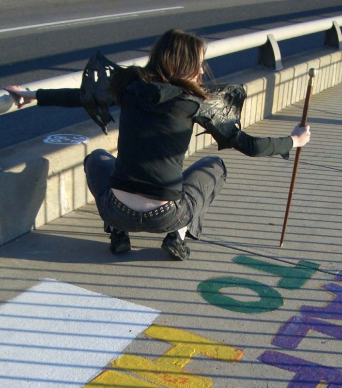
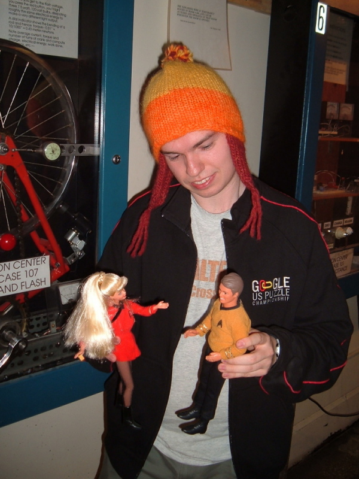
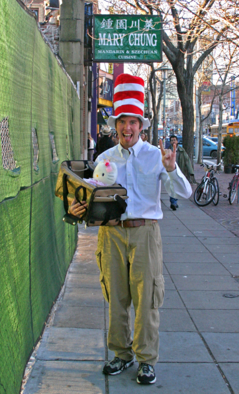
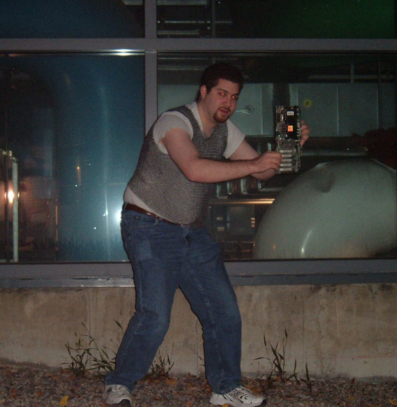
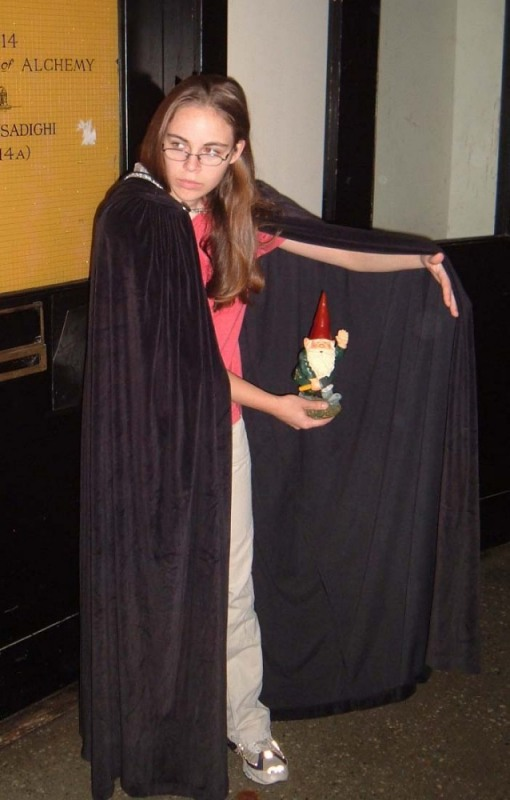
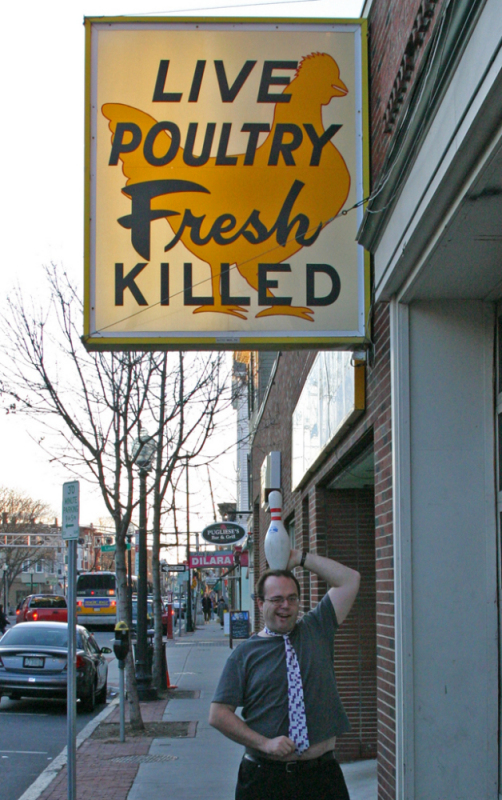
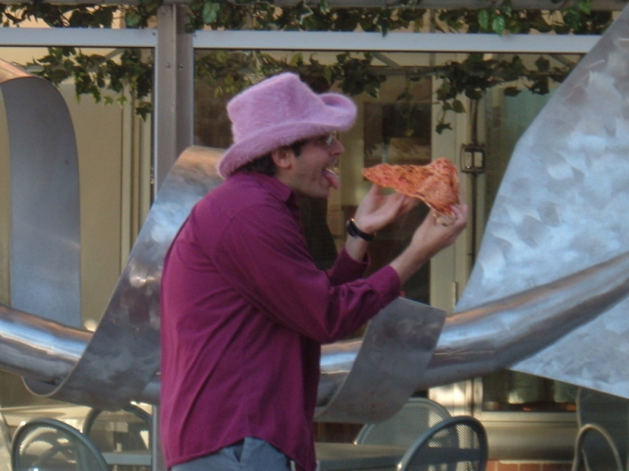
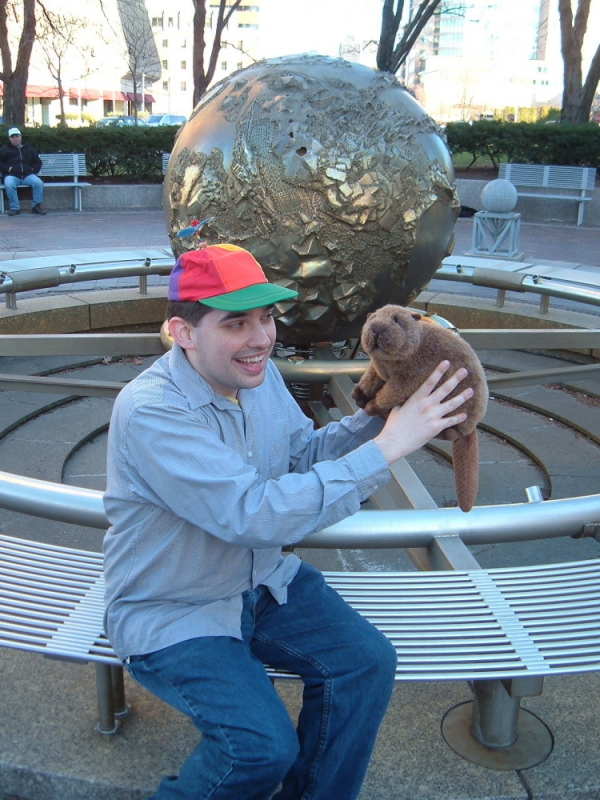
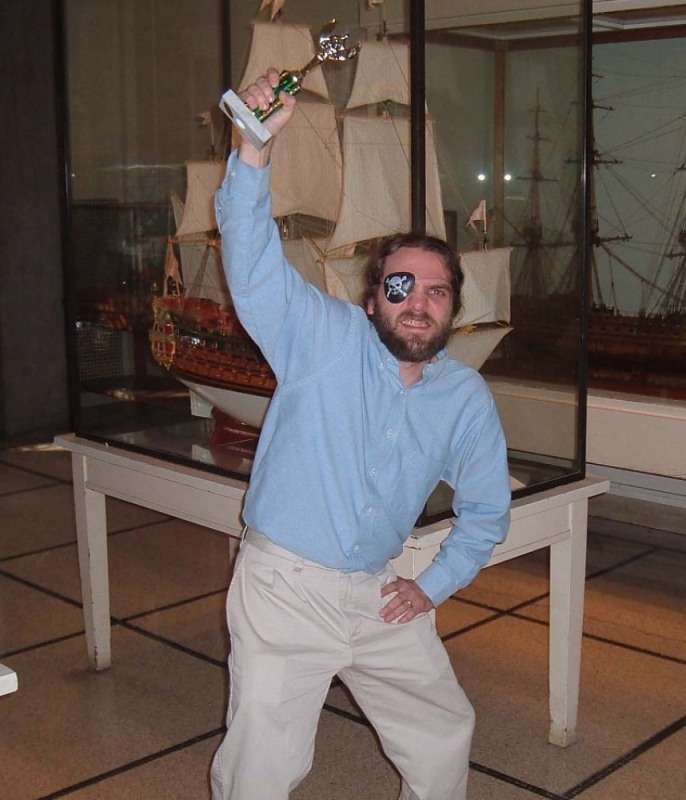
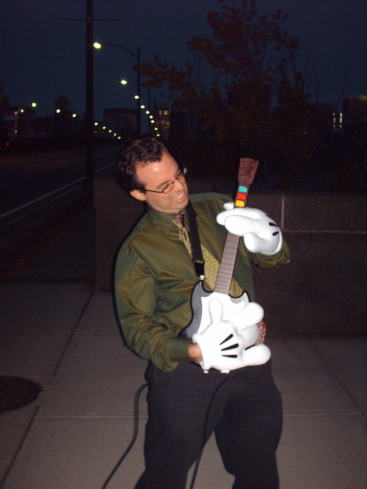

America's Least Wanted
Below are recent police photos of ten wanted criminals. These menaces to society are torturing the innocent and destroying the infrastructure of this city… naturally it's in our best interest to make sure they keep doing so. In order to throw off the cops, we'd like you to create fake versions of each of these photos (digital or prints). The closer the resemblance, the harder it will be for the police to pin anything on the real perpetrators, so accuracy is key.
Each photo is taken in a particular location on or around the MIT campus, and each criminal is holding a conspicuous object and wearing a conspicuous accessory. Your photos will each be rated on a scale of 0 to 2 points in each of the following categories:
- Location
- Object
- Accessory
- Physical position and facial expression
- Composition (angle and approximate framing)
You don't need to bother matching the criminals' clothing (except for the prominent accessory). Bonus points may be allocated for particularly creative touches (be sure to point them out). No alterations, digital or otherwise, should be made to your photos.
A perfect score is 100 points, but if you can get 75,
that's good evil enough for us. Make a call to Hell when
you've got some photos to show us.

Gwar Goyle

Geek Nerdlington

Chairman Meow

Drag Gunslayer

Gnome Chomsky

Lane Striker

Matt Zarella

Steve The Beav

Chahlie Roger

Starr Power